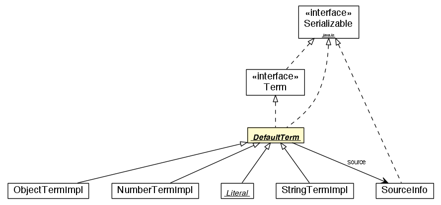

jason.asSyntax
Class DefaultTerm

java.lang.Object
 jason.asSyntax.DefaultTerm
jason.asSyntax.DefaultTerm
- All Implemented Interfaces:
- Term, ToDOM, java.io.Serializable, java.lang.Cloneable, java.lang.Comparable<Term>
- Direct Known Subclasses:
- Literal, NumberTermImpl, ObjectTermImpl, StringTermImpl
public abstract class DefaultTerm
- extends java.lang.Object
- implements Term, java.io.Serializable
Base class for all terms.
(this class may be renamed to AbstractTerm in future releases of Jason, so
avoid using it -- use ASSyntax class to create new terms)
- See Also:
ASSyntax,
Serialized Form
| Methods inherited from class java.lang.Object |
equals, finalize, getClass, notify, notifyAll, toString, wait, wait, wait |
| Methods inherited from interface jason.asSyntax.Term |
equals |
hashCodeCache
protected java.lang.Integer hashCodeCache
srcInfo
protected SourceInfo srcInfo
DefaultTerm
public DefaultTerm()
parse
public static Term parse(java.lang.String sTerm)
- Deprecated. it is preferable to use ASSyntax.parseTerm
isVar
public boolean isVar()
- Specified by:
isVar in interface Term
isUnnamedVar
public boolean isUnnamedVar()
- Specified by:
isUnnamedVar in interface Term
isLiteral
public boolean isLiteral()
- Specified by:
isLiteral in interface Term
isRule
public boolean isRule()
- Specified by:
isRule in interface Term
isList
public boolean isList()
- Specified by:
isList in interface Term
isString
public boolean isString()
- Specified by:
isString in interface Term
isInternalAction
public boolean isInternalAction()
- Specified by:
isInternalAction in interface Term
isArithExpr
public boolean isArithExpr()
- Specified by:
isArithExpr in interface Term
isNumeric
public boolean isNumeric()
- Specified by:
isNumeric in interface Term
isPred
public boolean isPred()
- Specified by:
isPred in interface Term
isStructure
public boolean isStructure()
- Specified by:
isStructure in interface Term
isAtom
public boolean isAtom()
- Specified by:
isAtom in interface Term
isPlanBody
public boolean isPlanBody()
- Specified by:
isPlanBody in interface Term
isGround
public boolean isGround()
- Specified by:
isGround in interface Term
isCyclicTerm
public boolean isCyclicTerm()
- Specified by:
isCyclicTerm in interface Term
getCyclicVar
public VarTerm getCyclicVar()
- Specified by:
getCyclicVar in interface Term
hasVar
public boolean hasVar(VarTerm t,
Unifier u)
- Specified by:
hasVar in interface Term
countVars
public void countVars(java.util.Map<VarTerm,java.lang.Integer> c)
- Specified by:
countVars in interface Term
clone
public abstract Term clone()
- Specified by:
clone in interface Term- Overrides:
clone in class java.lang.Object
calcHashCode
protected abstract int calcHashCode()
hashCode
public int hashCode()
- Overrides:
hashCode in class java.lang.Object
resetHashCodeCache
public void resetHashCodeCache()
compareTo
public int compareTo(Term t)
- Specified by:
compareTo in interface java.lang.Comparable<Term>
subsumes
public boolean subsumes(Term l)
- Specified by:
subsumes in interface Term
apply
public boolean apply(Unifier u)
- Description copied from interface:
Term
- replaces variables by their values in the unifier, returns true if some variable was applied
- Specified by:
apply in interface Term
getSrcInfo
public SourceInfo getSrcInfo()
- Specified by:
getSrcInfo in interface Term
setSrcInfo
public void setSrcInfo(SourceInfo s)
- Description copied from interface:
Term
- Removes the value cached for hashCode
- Specified by:
setSrcInfo in interface Term
getErrorMsg
public java.lang.String getErrorMsg()